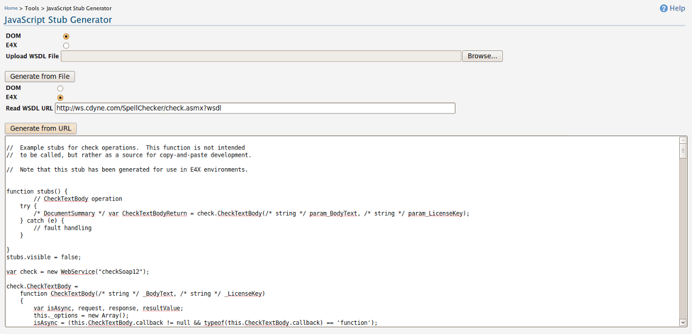

JavaScript Stub Generator
The Js stub generator is productivity tool which is bundled with the mashup server. It enables client code generation according to a WSDL. The required WSDL can be uploaded as a file or can be given as a url, where the stubs can be generated according to the E4X specification or according to DOM depending on the need.

Related articles and samples can be found at product documentation